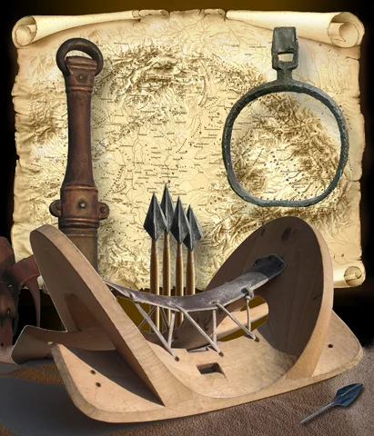
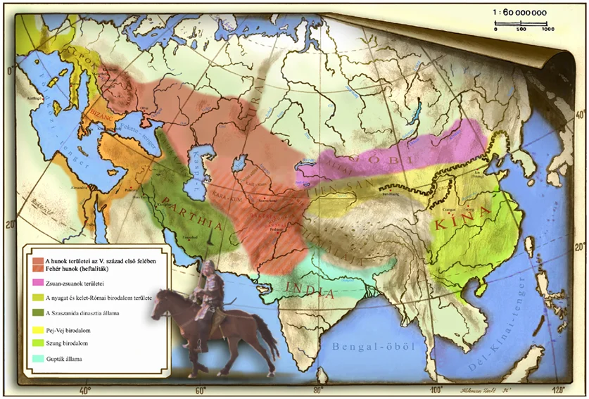
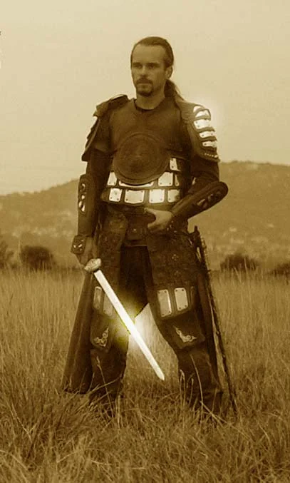
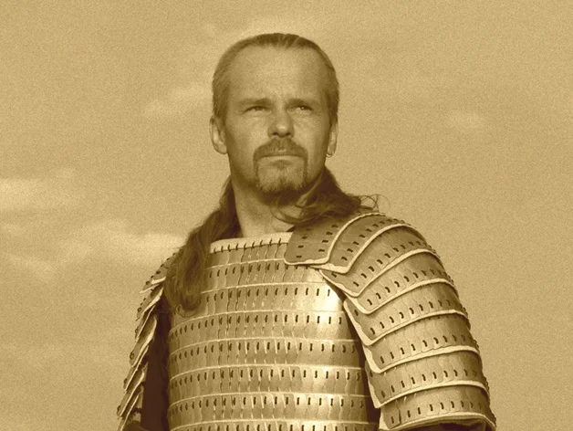
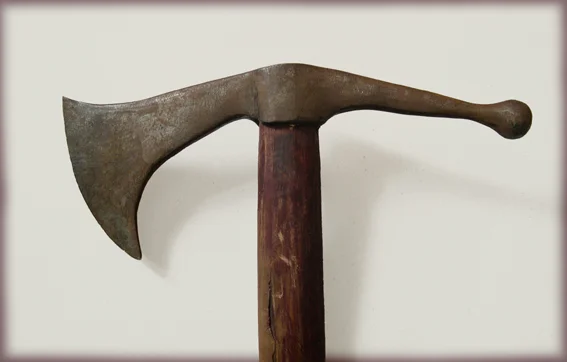
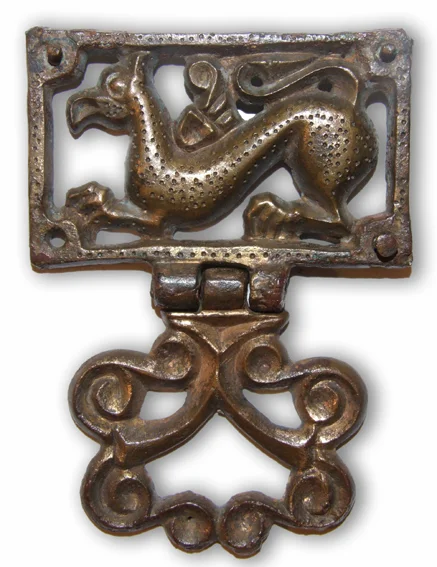
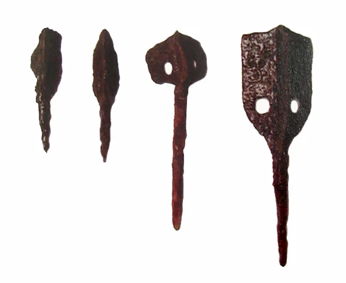

A HUN - MAGYAR HARCMŰVÉSZET ÉS ESZKÖZEI
A harcművészet szó hallatán a legtöbb embernek valamelyik távol-keleti küzdősport, önvédelem . , filozófia vagy ezek összessége jut először eszébe. A harc "művészete" viszont nem csak ezeket jelenti. Csaknem minden népnek, ma is létezőknek és eltűnteknek is, megvolt a saját harci kultúrája, értékei, sajátosságai, a katonák, a hadsereg - harcosok - képzési rendszere,
a harci feladatok megoldásának, az ellenfél harcképtelenné tételének vagy megsemmisítésének jellemző eszközei és módszerei. A már nem használatos (történelmi) katonai felszereléssel és harceszközökkel gyakorolt küzdelem módszereivel történő foglalkozás, annak bemutatása és továbbörökítése a katonai hagyományőrzés fontos része. A küzdelem lehetősége, a küzdelemre való felkészülés azonban nem kizárólag a katonák sajátossága. A küzdelem, harc, viaskodás jelen van az élet más területein, a hétköznapokban is. Léteznek vadász, pásztor, és egyéb népi hagyományok, melyek időnként összetalálkoznak, összekapcsolódnak a katonai tradíciókkal, de magasabb társadalmi és kulturális szinteken sohasem keverednek.Nagyon kevés olyan nép él ma a világon, amely napjainkig folyamatosan őrizte és adta tovább harci kultúrájának tartalmi elemeit. Sajnos ezeket mi sem voltunk képesek megtartani. Politikai viszonyok következtében számtalan esetben előfordult hagyományaink tiltása, üldöztetése, és tudatos pusztítása. Jóllehet e kultúra egészét sikerült szétzúzni, nagy részét felismerhetetlenné tenni vagy eltűntetni, de a megmaradt részecskékből sokminden összerakható, rekonstruálható.


A Kárpát-medence lovasíjász hadseregei gyorsan lebonyolított, nagyszabású katonai akcióikkal kápráztatták el és félemlítették meg kortársaikat, akik nyomába sem értek hatékonyságuknak. Mozgékonyságukat (gyorsaságukat), nagy távolságok és változatos terepviszonyok leküzdésére való képességüket valamint kiemelkedő harcértéküket lovaik biztosították. A lovas harcosok, lovaiktól még haláluk után sem váltak meg. A jellegzetes lovas temetkezés szokása csakis rájuk - a hunokra - volt jellemző. Temetkezéseik leletanyaga Eurázsia szerte jól mutatja évszázadokon át tartó jelenlétüket, leszármazóikkal, utódaikkal, pedig rokoni kapcsolataikat. Csupán törzsszövetségeik elnevezése változott.



Nem szabad elfelejteni, hogy katonai erő tekintetében mindig a lovas nagyállattartó csoportok voltak előnyben. Gyorsan mozgó, ütőképes csapataikkal szemben gyalogságra épülő haderőkkel nem lehetett eredményt elérni. Még többszörös létszámfölényben sem. Pontosan úgy nem, mint ahogyan kicsiben sem képes a gyalogos a lovast harcra kényszeríteni, megtámadni, fordítva azonban ugyanez bármikor játszva megvalósítható. Az integrált kapcsolatoknak tehát mindenki számára komoly előnyei voltak, minthogy az elkülönült népcsoportok között folyamatosan fennállt a súrlódások, nézeteltérések veszélye, amelyek eldöntésekor leginkább az erősebb nagyállattartók voltak képesek megvédeni saját érdekeiket vagy adott esetben azokat másokra rákényszeríteni. Részben éppen ezért gyakori volt a földművelő, városépítő és lakó népcsoportok erőszakos integrálása, kereskedelmi útvonalaik, földterületeik, elfoglalása és leuralása.
A támadások megelőzését, irányuk módosítását, illetve a drasztikus fennhatóság elkerülését gyakran a "letelepedett" életmódot folytatók szövetségkötésekkel próbálták kieszközölni több-kevesebb sikerrel. A szövetségi rendszerek persze - beleértve a legjobban működő, mindkét fél számára nyereséges együttműködéseket is - nem jelentettek garanciát az állapotok megtartására, a megállapodások betartására, egymás meg nem támadására
A lovas katonai erő ilyen módon képes volt nagymértékben függetlenedni alapvető igényeit kielégítő földterületektől és szinte bárhol eredményesen fellépni. Ellenfeleik rendre védelmi pozíciókba kényszerültek és ellenállásra is csekély esélyük maradt.

A fotográfia, mi több, a videotechnika korában már nehéz megérteni az alkotás folyamatát, az ábrázolás művészetét, hogy a korabeli művek nem egyeznek mindenben, precízen, milliméter pontosan a valósággal. Hogy mi hiteles és mi nem, gyakran örök dilemma marad. De csupán az elméleti síkon. Négy dimenzió leképezésére megvan a lehetőség, de csak négy dimenzióban. A valóságot a valóságban lehet legjobban megismerni. A gyakorlatban. A feltételezések igazolására vagy megcáfolására is a legmegbízhatóbb módszer a kísérletezés. Az elmélet összevetése a gyakorlattal. Általánosítani, jellemezni pedig nyilvánvalóan a tömegesen azonos, túlnyomórészt egyező adatok és információk alapján lehet, és nem az egyedi, különleges, elenyésző számban fellelhető - bár feltételezhetően jelenlévő - ritkaságokat gyűjtögetve és kiemelve.Talán sokan felhördülnének, ha például a Kárpát-medence lakosságát, az itt élők származását, jellemző tulajdonságait, mondjukegy-két abszolút kisebbségben lévőés a többségtől igen eltérő tulajdonságokkal bíró etnikum alapján próbálná valaki meghatározni. Vagy a kisebbségre jellemző tulajdonságokat a többségre általánosítani.
Tüzes nyilak alkalmazása ostromhelyzetben az ellenség védműveinek, raktárainak, egyéb objektumainak nagy távolságból történő felgyújtására kézenfekvő lehetőségként kínálkozik. Megvalósítása mégis komoly nehézségekbe ütközik. Még a mai kémiai és technikai ismeretek birtokában is nehéz megoldást találni két alapvető problémára. Az egyik, hogy a kilőtt nyilvessző menetszele ne oltsa el a lángot, a másik pedig a szükséges gyújtó hatás biztosítása. Vagyis hogy a lövedék a célfelületbe hatolva képes legyen azt lángra lobbantani.Mindezek átgondolásakor ne a filmek látványvilágából induljunk ki, hiszen tudjuk, hogy a vásznon minden lehetséges. Napjainkban e mutatvány kivitelezésére úgynevezett "kaszkadőr zselét" alkalmaznak. Ebből kis mennyiség is biztosítja a nyilvessző égését repülés közben. Az ilyen anyaggal kezelt nyilak gyújtó hatása azonban igen csekély. Nagyjából a nullával egyenlő, hacsak nem száraz széna- vagy szalmakazal, esetleg benzines kannák ellen próbáljuk bevetni.
Az összegyűjtött információkra alkalmazott többségi elv, a gyakorlati vagy kísérleti régészet és az összehasonlító tudományágak segítségével rajzolódnak ki előttünk ősi harci kultúránk feledésbe merült elemei, katonai hagyományaink, hadi tudományunk, a hagyományos magyar harcművészet.Az ostromlott védművek vagy egyéb megsemmisíteni, illetve lángra lobbantani kívánt objektumok azonban a legritkább esetben készültek ilyen anyagokból. Ebből logikusan következik, hogy egy korabeli gyújtó nyilnak a napjainkban bevált technikánál fokozottabb gyújtó hatással kellett rendelkeznie.